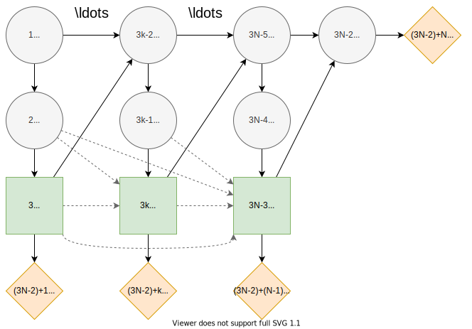

Pig Breeding
Description
The pig breeding problem as described in [1].
"A pig breeder is growing pigs for a period of four months and subsequently selling them. During this period the pig may or may not develop a certain disease. If the pig has the disease at the time it must be sold, the pig must be sold for slaughtering, and its expected market price is then 300 DKK (Danish kroner). If it is disease free, its expected market price as a breeding animal is 1000 DKK
Once a month, a veterinary doctor sees the pig and makes a test for presence of the disease. If the pig is ill, the test will indicate this with probability 0.80, and if the pig is healthy, the test will indicate this with probability 0.90. At each monthly visit, the doctor may or may not treat the pig for the disease by injecting a certain drug. The cost of an injection is 100 DKK.
A pig has the disease in the first month with probability 0.10. A healthy pig develops the disease in the subsequent month with probability 0.20 without injection, whereas a healthy and treated pig develops the disease with probability 0.10, so the injection has some preventive effect. An untreated pig that is unhealthy will remain so in the subsequent month with probability 0.90, whereas the similar probability is 0.50 for an unhealthy pig that is treated. Thus spontaneous cure is possible, but treatment is beneficial on average."
Influence Diagram

The influence diagram for the the generalized $N$-month pig breeding. The nodes are associated with the following states. Health states $h_k=\{ill,healthy\}$ represent the health of the pig at month $k=1,...,N$. Test states $t_k=\{positive,negative\}$ represent the result from testing the pig at month $k=1,...,N-1$. Treat states $d_k=\{treat, pass\}$ represent the decision to treat the pig with an injection at month $k=1,...,N-1$.
The dashed arcs represent the no-forgetting principle and we can toggle them on and off in the formulation.
In decision programming, we start by defining the node indices and states, as follows:
using JuMP, Gurobi
using DecisionProgramming
const N = 4
const health = [3*k - 2 for k in 1:N]
const test = [3*k - 1 for k in 1:(N-1)]
const treat = [3*k for k in 1:(N-1)]
const cost = [(3*N - 2) + k for k in 1:(N-1)]
const price = [(3*N - 2) + N]
const health_states = ["ill", "healthy"]
const test_states = ["positive", "negative"]
const treat_states = ["treat", "pass"]
S = States([
(length(health_states), health),
(length(test_states), test),
(length(treat_states), treat),
])
C = Vector{ChanceNode}()
D = Vector{DecisionNode}()
V = Vector{ValueNode}()
X = Vector{Probabilities}()
Y = Vector{Consequences}()Next, we define the nodes with their information sets and corresponding probabilities or consequences.
Health at First Month
As seen in the influence diagram, the node $h_1$ has no arcs into it, making it a root node. Therefore, the information set $I(h_1)$ is empty.
The probability that pig is ill in the first month is
We obtain the complement probabilities for binary states by subtracting from one
In decision programming, we add the nodes and probabilities as follows:
for j in health[[1]]
I_j = Vector{Node}()
X_j = zeros(S[I_j]..., S[j])
X_j[1] = 0.1
X_j[2] = 1.0 - X_j[1]
push!(C, ChanceNode(j, I_j))
push!(X, Probabilities(j, X_j))
endHealth at Subsequent Months
The probability that the pig is ill in the subsequent months $k=2,...,N$ depends on the treatment decision and state of health in the previous month $k-1$. The nodes $h_{k-1}$ and $d_{k-1}$ are thus in the information set $I(h_k)$, meaning that the probability distribution of $h_k$ is conditional on these nodes:
In decision programming:
for (i, k, j) in zip(health[1:end-1], treat, health[2:end])
I_j = [i, k]
X_j = zeros(S[I_j]..., S[j])
X_j[2, 2, 1] = 0.2
X_j[2, 2, 2] = 1.0 - X_j[2, 2, 1]
X_j[2, 1, 1] = 0.1
X_j[2, 1, 2] = 1.0 - X_j[2, 1, 1]
X_j[1, 2, 1] = 0.9
X_j[1, 2, 2] = 1.0 - X_j[1, 2, 1]
X_j[1, 1, 1] = 0.5
X_j[1, 1, 2] = 1.0 - X_j[1, 1, 1]
push!(C, ChanceNode(j, I_j))
push!(X, Probabilities(j, X_j))
endNote that the order of states indexing the probabilities is reversed compared to the mathematical definition.
Health Test
For the probabilities that the test indicates a pig's health correctly at month $k=1,...,N-1$, we have
In decision programming:
for (i, j) in zip(health, test)
I_j = [i]
X_j = zeros(S[I_j]..., S[j])
X_j[1, 1] = 0.8
X_j[1, 2] = 1.0 - X_j[1, 1]
X_j[2, 2] = 0.9
X_j[2, 1] = 1.0 - X_j[2, 2]
push!(C, ChanceNode(j, I_j))
push!(X, Probabilities(j, X_j))
endDecision to Treat
In decision programing, we add the decision nodes for decision to treat the pig as follows:
for (i, j) in zip(test, treat)
I_j = [i]
push!(D, DecisionNode(j, I_j))
endThe no-forgetting assumption does not hold, and the information set $I(d_k)$ only comprises the previous test result.
Cost of Treatment
The cost of treatment decision for the pig at month $k=1,...,N-1$ is defined
In decision programming:
for (i, j) in zip(treat, cost)
I_j = [i]
Y_j = zeros(S[I_j]...)
Y_j[1] = -100
Y_j[2] = 0
push!(V, ValueNode(j, I_j))
push!(Y, Consequences(j, Y_j))
endSelling Price
The price of given the pig health at month $N$ is defined
In decision programming:
for (i, j) in zip(health[end], price)
I_j = [i]
Y_j = zeros(S[I_j]...)
Y_j[1] = 300
Y_j[2] = 1000
push!(V, ValueNode(j, I_j))
push!(Y, Consequences(j, Y_j))
endValidating Influence Diagram
Finally, we need to validate the influence diagram and sort the nodes, probabilities and consequences in increasing order by the node indices.
validate_influence_diagram(S, C, D, V)
sort!.((C, D, V, X, Y), by = x -> x.j)We define the path probability.
P = DefaultPathProbability(C, X)As the path utility, we use the default, which is the sum of the consequences given the path.
U = DefaultPathUtility(V, Y)Decision Model
We apply an affine transformation to the utility function, making all path utilities positive. The purpose of this is discussed in the theoretical section of this documentation.
U⁺ = PositivePathUtility(S, U)
model = Model()
z = decision_variables(model, S, D)
π_s = path_probability_variables(model, z, S, D, P; hard_lower_bound=false)We also demonstrate one of the lazy constraints defined in the same section.
active_paths_cut(model, π_s, S, P)We create the objective function
EV = expected_value(model, π_s, S, U⁺)
@objective(model, Max, EV)and set up the solver and solve the problem.
optimizer = optimizer_with_attributes(
() -> Gurobi.Optimizer(Gurobi.Env()),
"IntFeasTol" => 1e-9,
"LazyConstraints" => 1,
)
set_optimizer(model, optimizer)
optimize!(model)Analyzing Results
Decision Strategy
We obtain the optimal decision strategy:
Z = DecisionStrategy(z, D)julia> print_decision_strategy(S, Z)
┌────────┬──────┬───┐
│ Nodes │ (2,) │ 3 │
├────────┼──────┼───┤
│ States │ (1,) │ 2 │
│ States │ (2,) │ 2 │
└────────┴──────┴───┘
┌────────┬──────┬───┐
│ Nodes │ (5,) │ 6 │
├────────┼──────┼───┤
│ States │ (1,) │ 1 │
│ States │ (2,) │ 2 │
└────────┴──────┴───┘
┌────────┬──────┬───┐
│ Nodes │ (8,) │ 9 │
├────────┼──────┼───┤
│ States │ (1,) │ 1 │
│ States │ (2,) │ 2 │
└────────┴──────┴───┘The optimal strategy is as follows. In the first period, state 2 (no treatment) is chosen in node 3 ($d_1$) regardless of the state of node 2 ($t_1$). In other words, the pig is not treated in the first month. In the two subsequent months, state 1 (treat) is chosen if the corresponding test result is 1 (positive).
State Probabilities
The state probabilities for the strategy $Z$ can also be obtained. These tell the probability of each state in each node, given the strategy $Z$.
sprobs = StateProbabilities(S, P, Z)julia> print_state_probabilities(sprobs, health)
┌───────┬──────────┬──────────┬─────────────┐
│ Node │ State 1 │ State 2 │ Fixed state │
│ Int64 │ Float64 │ Float64 │ String │
├───────┼──────────┼──────────┼─────────────┤
│ 1 │ 0.100000 │ 0.900000 │ │
│ 4 │ 0.270000 │ 0.730000 │ │
│ 7 │ 0.295300 │ 0.704700 │ │
│ 10 │ 0.305167 │ 0.694833 │ │
└───────┴──────────┴──────────┴─────────────┘
julia> print_state_probabilities(sprobs, test)
┌───────┬──────────┬──────────┬─────────────┐
│ Node │ State 1 │ State 2 │ Fixed state │
│ Int64 │ Float64 │ Float64 │ String │
├───────┼──────────┼──────────┼─────────────┤
│ 2 │ 0.170000 │ 0.830000 │ │
│ 5 │ 0.289000 │ 0.711000 │ │
│ 8 │ 0.306710 │ 0.693290 │ │
└───────┴──────────┴──────────┴─────────────┘
julia> print_state_probabilities(sprobs, treat)
┌───────┬──────────┬──────────┬─────────────┐
│ Node │ State 1 │ State 2 │ Fixed state │
│ Int64 │ Float64 │ Float64 │ String │
├───────┼──────────┼──────────┼─────────────┤
│ 3 │ 0.000000 │ 1.000000 │ │
│ 6 │ 0.289000 │ 0.711000 │ │
│ 9 │ 0.306710 │ 0.693290 │ │
└───────┴──────────┴──────────┴─────────────┘Utility Distribution
We can also print the utility distribution for the optimal strategy. The selling prices for a healthy and an ill pig are 1000DKK and 300DKK, respectively, while the cost of treatment is 100DKK. We can see that the probability of the pig being ill in the end is the sum of three first probabilities, approximately 30.5%. This matches the probability of state 1 in node 10 in the state probabilities shown above.
udist = UtilityDistribution(S, P, U, Z)julia> print_utility_distribution(udist)
┌─────────────┬─────────────┐
│ Utility │ Probability │
│ Float64 │ Float64 │
├─────────────┼─────────────┤
│ 100.000000 │ 0.047857 │
│ 200.000000 │ 0.129330 │
│ 300.000000 │ 0.127980 │
│ 800.000000 │ 0.061753 │
│ 900.000000 │ 0.247160 │
│ 1000.000000 │ 0.385920 │
└─────────────┴─────────────┘Finally, we print some statistics for the utility distribution. The expected value of the utility is 727DKK, the same as in [1].
julia> print_statistics(udist)
┌──────────┬────────────┐
│ Name │ Statistics │
│ String │ Float64 │
├──────────┼────────────┤
│ Mean │ 726.812100 │
│ Std │ 338.460723 │
│ Skewness │ -0.811628 │
│ Kurtosis │ -1.173465 │
└──────────┴────────────┘References
- 1Lauritzen, S. L., & Nilsson, D. (2001). Representing and solving decision problems with limited information. Management Science, 47(9), 1235–1251. https://doi.org/10.1287/mnsc.47.9.1235.9779